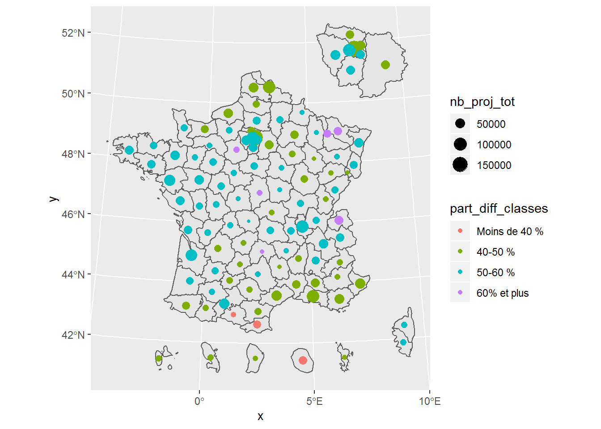

7 Cercles proportionnels
Un autre type de carte représente chaque valeur par un cercle proportionnel et éventuellement une couleur.
Ces cartes permettent de mettre en valeur les volumes.
7.1 Principe
On les réalise à l’aide de la fonction stat_sf_coordinates().
On procède en plusieurs étapes :
- on affiche d’abord le fond de carte à vide ;
- on lui spécifie les valeurs à afficher, ici sur le nombre de projets :
nb_proj_tot; - on personnalise ensuite les paramètres des points à afficher, par exemple en ajoutant une couleur, la part de projets difficiles, en classes.
ggplot(data = bmo_dep_shp) +
geom_sf() +
stat_sf_coordinates(aes(size = nb_proj_tot,
color = part_diff_classes))
7.2 Personnalisation
On peut jouer sur les paramètres pour afficher d’autres formes. Pour en savoir plus, on peut se reporter aux spécifications du paramètre shape : https://ggplot2.tidyverse.org/articles/ggplot2-specs.html
Cela peut supposer de modifier la façon de passer les variables (avec fill plutôt que color par exemple).